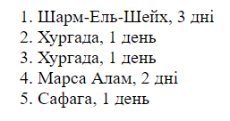
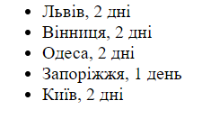

HTML-списки використовуються для групування пов'язаних між собою фрагментів інформації. Існує три види списків: • маркований список - <ul> - кожен елемент списку <li> зазначається маркером, • нумерований список - <ol> - кожен елемент списку <li> зазначається цифрою, • список визначень - <dl> - складається з пар термін <dt> - <dd> визначення. Кожен список являє собою контейнер, усередині якого розташовуються елементи списку або пари термін-визначення.
Список №1
Список №2
